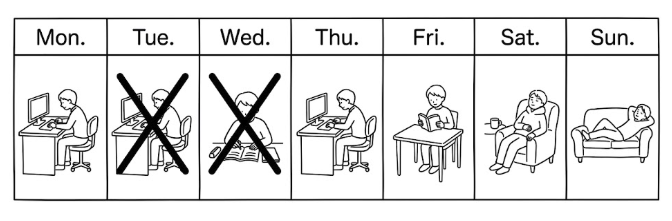
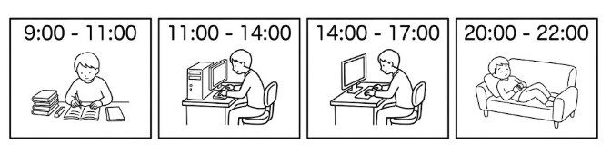

← 戻る
第4課 時間（じかん）と動詞（どうし）
目次
- 何時（なんじ）・何分（なんぷん）
- 曜日（ようび）
- 毎晩（まいばん）・毎日（まいにち）
- 今日（きょう）・明日（あした）・昨日（きのう）
- ます・ません
- ました・ませんでした
- れんしゅう
- かんじリスト
何時（なんじ）・何分（なんぷん）
- 今（いま）= now
- 何時（なんじ）= what time
- 何分（なんぷん）= what minute
- 今（いま）何時（なんじ）ですか。→ What time is it now?
- メキシコは 今（いま）何時（なんじ）ですか。→ What time is it in Mexico now?
- 午前（ごぜん）１０時１０分です。→ It's 10:10 AM.
- 午後（ごご）８時４５分です。→ It's 8:45 PM.
曜日（ようび）
〇〇 + ようび = day of the week
| 月 |
火 |
水 |
木 |
金 |
土 |
日 |
| げつ |
か |
すい |
もく |
きん |
ど |
にち |
| Mon |
Tue |
Wed |
Thu |
Fri |
Sat |
Sun |
- 東京（とうきょう）は 何曜日（なんようび）ですか。→ What day is it in Tokyo?
- 日曜日（にちようび）です。→ It's Sunday.
- 休み（やすみ）は 何曜日（なんようび）ですか。→ What day is your day off?
- 水曜日（すいようび）です。→ It's Wednesday.
毎晩（まいばん）・毎日（まいにち）
- 毎晩（まいばん）= every evening
- 毎日（まいにち）= every day
- Adding 毎（まい）means "every~"
- 毎朝（まいあさ）= every morning
- 毎回（まいかい）= every time
- 毎晩（まいばん）何時（なんじ）に 寝（ね）ますか。→ What time do you go to bed every evening?
- １１時に 寝ます。→ I go to bed at 11.
- 毎日（まいにち）何時（なんじ）から 何時（なんじ）まで 働（はたら）きますか。→ What time do you work every day from and
until?
今日（きょう）・明日（あした）・昨日（きのう）
- 今日（きょう）= today
- 今日（きょう）働（はたら）きますか。→ Do you work today?
- 明日（あした）= tomorrow
- 明日（あした）遊（あそ）びますか。→ Will you play tomorrow?
- 昨日（きのう）= yesterday
- ※ We'll practice sentences with 昨日 in the next section（ました・ませんでした）
ます・ません
- ます = present / future, affirmative = 肯定（こうてい）
- ません = present / future, negative = 否定（ひてい）
|
ます |
ません |
| 寝（ね）る |
寝ます |
寝ません |
| 働（はたら）く |
働きます |
働きません |
| 勉強（べんきょう）する |
勉強します |
勉強しません |
- 私（わたし）は 毎日（まいにち）勉強（べんきょう）します。→ I study every day.
- 私（わたし）は 今日（きょう）働（はたら）きません。→ I don't work today.
ました・ませんでした
- ました = past, affirmative = 肯定（こうてい）
- ませんでした = past, negative = 否定（ひてい）
|
ました |
ませんでした |
| 寝る |
寝ました |
寝ませんでした |
| 働く |
働きました |
働きませんでした |
| 勉強する |
勉強しました |
勉強しませんでした |
- 私は 昨日勉強しました。→ I studied yesterday.
- 私は 昨日働きませんでした。→ I didn't work yesterday.
れんしゅう


かんじリスト
| 漢字 |
読み方 |
意味 |
| 今 |
いま |
now |
| 午前 |
ごぜん |
AM |
| 午後 |
ごご |
PM |
| 曜日 |
ようび |
day of the week |
| 休み |
やすみ |
day off |
| 毎晩 |
まいばん |
every evening |
| 毎日 |
まいにち |
every day |
| 毎朝 |
まいあさ |
every morning |
| 毎回 |
まいかい |
every time |
| 昨日 |
きのう |
yesterday |
| 今日 |
きょう |
today |
| 明日 |
あした |
tomorrow |
| 勉強します |
べんきょうします |
study |